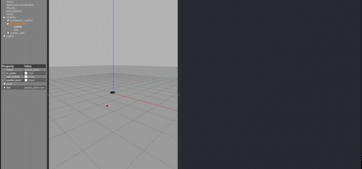

Ball Tracking and Chasing Robot using ROS and Gazebo

- This project was my first introduction to Perception and learning about the different image processing techniques that I could apply for Object Detection using the minimal computational resources! I explored methods such as Canny Edge Detection, and Image Masking to extract only the object of interest from the RGB camera feed. Once that is done, I calculated the distance to the object by finding it’s centroid and position relative to the robot.
- Once the distance to the object was found, we needed to get the robot to a safe distance within it, so I wrote a simple proportional velocity controller that checks if the object is in the robot’s FOV. If not, a slight angular velocity was provided to rotate the robot into the object’s Line of Sight.
You can find the code repository for this project on my GitHub!